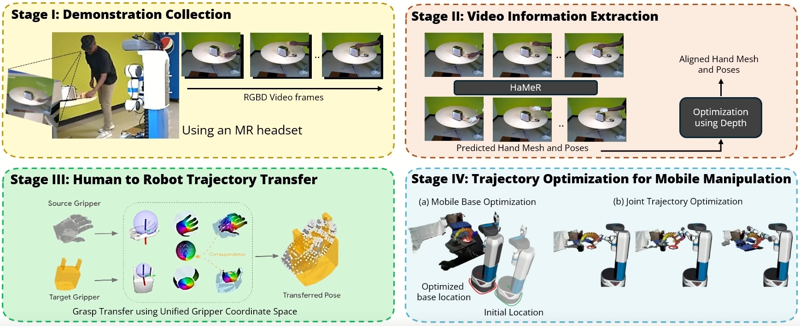

Validated on 16 real-world tasks · 3 trials each on a Fetch mobile manipulator.
We introduce a novel system for human-to-robot trajectory transfer that enables robots to manipulate objects by learning from human demonstration videos. The system consists of four modules. The first module is a data collection module that is designed to collect human demonstration videos from the point of view of a robot using an MR headset. The second module is a video understanding module that detects objects and extracts 3D human-hand trajectories from demonstration videos. The third module transfers a human-hand trajectory into a reference trajectory of a robot end-effector in 3D space. The last module utilizes a trajectory optimization algorithm to solve a trajectory in the robot configuration space that can follow the end-effector trajectory transferred from the human demonstration. Consequently, these modules enable a robot to watch a human demonstration video once and then repeat the same mobile manipulation task in different environments, even when objects are placed differently from the demonstrations.

Please cite our work if it helps your research.
@misc{2025hrt1,
title = {HRT1: One-Shot Human-to-Robot Trajectory Transfer for Mobile Manipulation},
author = {Sai Haneesh Allu and Jishnu Jaykumar P and Ninad Khargonkar and Tyler Summers and Jian Yao and Yu Xiang},
year = {2025},
eprint = {2510.21026},
archivePrefix = {arXiv},
primaryClass = {cs.RO},
url = {https://arxiv.org/abs/2510.21026}
}Send any comments or questions to Sai or Jishnu — saihaneesh.allu@utdallas.edu · jishnu.p@utdallas.edu
Supported by